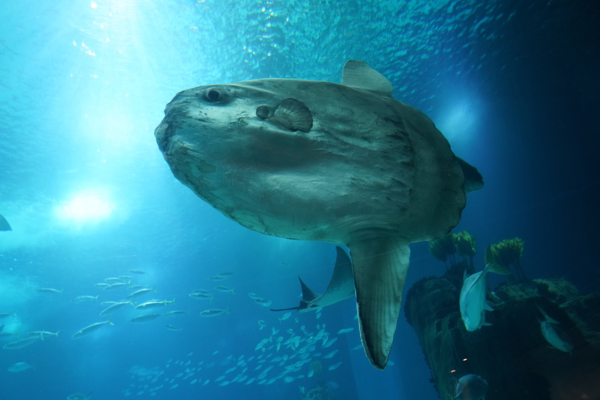

Learn More About Ocean Sunfish

Ocean Sunfish by Pixabay.
These resources provide more information about ocean sunfish, including their habitat, diet, and unique characteristics.
Information Sources
Image Credit
- 1. Ocean Sunfish Swimming in Danish Waters · Free Stock Photo, www.pexels.com/photo/ocean-sunfish-swimming-in-danish-waters-28993671/. Accessed 11 Oct. 2026.
- 2. Close-up of Ocean Sunfish in Hirtshals Aquarium · Free Stock Photo, www.pexels.com/photo/close-up-of-ocean-sunfish-in-hirtshals-aquarium-28993670/. Accessed 11 Oct. 2026.
- 3. Close-up of Ocean Sunfish in Hirtshals Aquarium · Free Stock Photo, www.pexels.com/photo/close-up-of-ocean-sunfish-in-hirtshals-aquarium-28993670/. Accessed 11 Oct. 2026.